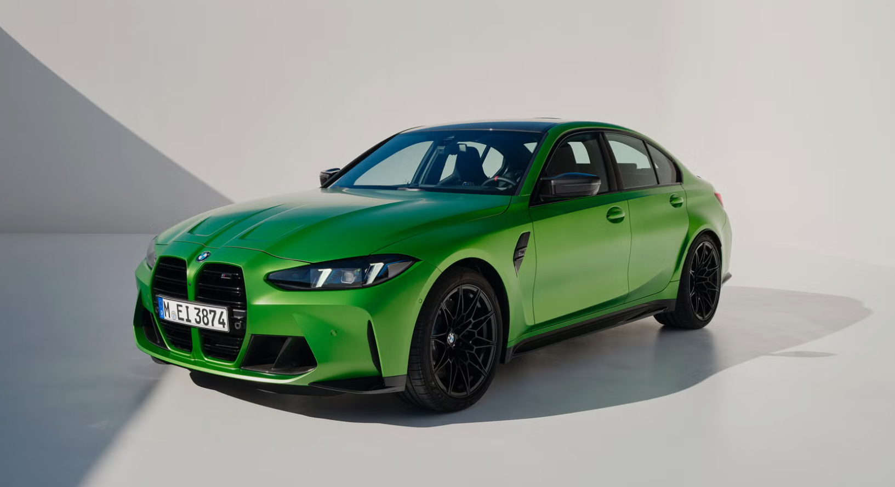

The BMW M3
The BMW M3 is the high-performance version of the 3 Series, built by BMW's in-house M division. First introduced in 1986, it was originally designed for motorsport homologation before becoming one of the most respected sports sedans in the world. Every generation of the M3 has paired a road-going chassis with a race-derived engine, making it equally at home on a track day or a daily commute. It remains one of the benchmark cars that rival brands are measured against.
Key Dates
- 1986 - First generation M3 (E30) launched
- 1992 - Second generation M3 (E36) introduced
- 2000 - Third generation M3 (E46) released
- 2007 - Fourth generation M3 (E90/E92) debuts with a V8 engine
- 2014 - Fifth generation M3 (F80) returns to a turbocharged inline-six
- 2020 - Sixth generation M3 (G80) unveiled with a larger front grille
Key Facts
- The original E30 M3 was built to qualify for Group A touring car racing
- The E46 M3 used a naturally aspirated inline-six producing 333 horsepower
- The current G80 M3 is available with a manual gearbox or an 8-speed automatic
- The M3 Competition variant offers even more power and a stiffer suspension setup

The M3 has always been the car that proves you don't need to choose between comfort and performance.
- BMW M Division engineer, in an interview about the M3's design philosophy.
The M3 is famous for its inline-six engine sound and its razor-sharp handling balance, two traits that have defined the car since its very first generation.
Watch the M3 in Action
Learn more on the official BMW M3 page .